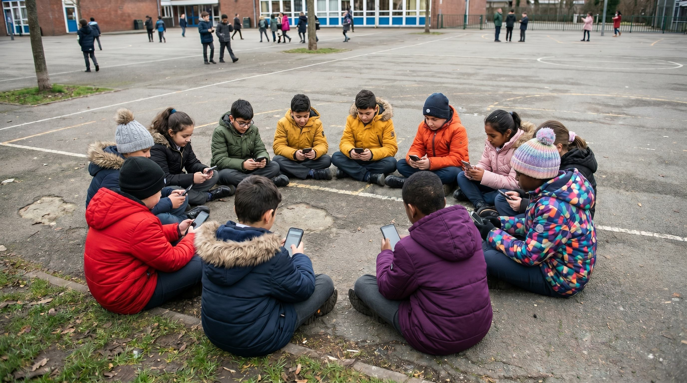

Actualmente nos encontramos inmersos en lo que el filósofo Roberto Palacio define como "La era de la ansiedad", una época que nos marca y que se caracteriza por ser una espera sin fin en un mundo sin utopías. En este contexto hipermoderno, la ansiedad y el aburrimiento se han consolidado como los dos grandes fenómenos que definen nuestro tiempo. Ambas condiciones denotan un profundo "vacío vital", revelando que existe una continuidad directa entre la ansiedad, el aburrimiento y la nada. Como consecuencia de esto, la sociedad actual ha transformado la vida entera en una huida permanente del aburrimiento, fundamentalmente porque no sabe como manejar el "tiempo muerto".
Este "tiempo muerto" o estado de inactividad se percibe hoy como una amenaza intolerable. La razón detrás de este pánico radica en que la falta de acción y el silencio nos obligan a quedarnos a solas con nuestros propios pensamientos. Nos fuerzan a conectarnos con una vida interior que hemos descuidado profundamente, cambiándola por la necesidad de una identidad externalizada que vive en la constante búsqueda de aprobación y de los "likes"de los demás. Ante la angustia que genera este encuentro íntimo con nosotros mismos, la solución érronea que la sociedad aplica es la de intensificar la acción y buscar el estímulo constante
Para escapar de este vacío y evitar pensar, nos entregamos compulsivamente a actividades que anestesian la mente. Un ejemplo claro de esto es el "scrolleo" infinito en las redes sociales o el consumo pasivo de pantallas, acciones que funcionan como una "atención temporal" para combatir el tedio. Sin embargo, el aburrimiento no se disipa verdaderamente con estas distracciones efímeras, sino mediante un enfoque en nosotros mismos al que solo se llega a través del pensamiento crítico.
Esta dinámica de hiperestimulación y evasión tiene un impacto directo y destructivo en los procesos educativos. El cambio cultural que esquiva constantemente el aburrimiento deteriora el tiempo de comprensión y asimilación que exigen los verdaderos procesos de aprendizaje. Tal como advierte Palacio, el pensar crítico requiere tiempo y paciencia. Pensar no es una actividad que se pueda realizar con velocidad ni algo que se "resuelve buscando en internet"; implica un proceso intermedio, de sobrevolar un problema y sumergirse en él, tolerando la lentitud y el ensayo y error.
Al robarle a los estudiantes esta "lentitud" indispensable para el pensamiento, el entorno tecnológico y la cultura de la inmediatez los despojan de la capacidad de sostener la atención. Por lo tanto, la dispersión en el aula y la intolerancia a la inactividad no son simples caprichos infantiles o adolescentes, sino el reflejo de una sociedad entera que ha perdido la capacidad de habitar el 'tiempo muerto' sin entrar en desesperación